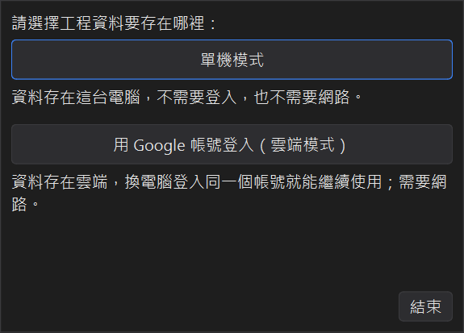
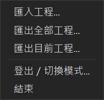

匯入匯出與雲端模式
工程資料可以匯出成檔案備份，或搬到另一台電腦；也可以改用雲端模式，讓多台電腦使用同一份資料。
1、單機模式與雲端模式

| 單機模式 | 雲端模式 | |
|---|---|---|
| 登入 | 不需要 | Google 帳號 |
| 資料存放 | 這台電腦 | 雲端（每個帳號只看得到自己的工程） |
| 網路 | 不需要（帶入國定假日與下載雨量時才會連網） | 需要 |
| 多台電腦 | 用匯出／匯入搬資料 | 登入同一個帳號就能繼續使用 |
選擇雲端模式時，瀏覽器會開啟 Google 登入頁面，完成授權後回到程式即可使用。之後開啟程式會自動登入。
第一次登入雲端、而雲端帳號還沒有任何工程時，如果這台電腦的單機模式有工程，程式會詢問要不要上傳到雲端； 單機的資料會保留，之後切回單機模式還看得到。
2、檔案選單

| 匯入工程 | 匯入之前匯出的工程檔，可以是「全部工程」或「單一工程」的檔案，程式會自動判斷。 |
|---|---|
| 匯出全部工程 | 所有工程（含日報表）存成一個 .json 檔，適合備份或搬到另一台電腦。 |
| 匯出目前工程 | 只匯出目前選的工程，例如交給同事接手。 |
| 登出／切換模式 | 程式會結束，下次啟動重新選擇單機或雲端模式（雲端模式會登出這台電腦）。資料不會被刪除。 |
3、匯入時工程編號重複
匯入的工程如果和現有工程的編號相同，會顯示兩邊的工程名稱與日報天數，讓你選擇：
● 略過：保留現有的，不匯入這個工程。
● 覆蓋現有的：用匯入的取代現有的。
● 兩者都保留：匯入的工程編號後面加上「(2)」。
勾選之後重複的工程都這樣處理，就不會每個工程都問一次。
4、把單機的工程搬上雲端
在雲端模式選檔案 → 匯入工程時，開啟的位置就是這台電腦單機資料存放的資料夾， 直接選 Projects.json 就能把單機模式的所有工程匯入雲端帳號。
單機模式的資料存在 %LOCALAPPDATA%\FoxInfo\ScheduleCalculator\Projects.json，
每次存檔都會另外保留一份 .bak 備份；主檔損壞時程式會自動改讀備份。
5、版本更新
程式啟動後會在背景檢查新版本，有新版時會跳出通知；也可以從說明 → 檢查更新手動檢查。
● Windows 安裝版：按下更新後自動下載、安裝並重新啟動程式。
● 免安裝版：下載新版的 zip 檔，解壓後取代舊的程式資料夾。
說明 → 關於可以看到目前的版本；有新版本時，版本號旁邊會出現「最新版本」連結。